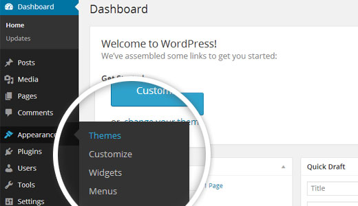
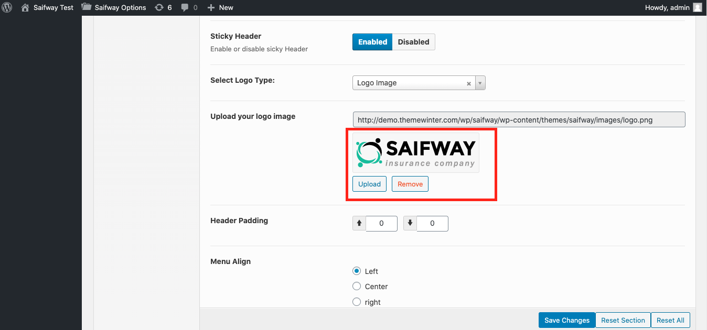
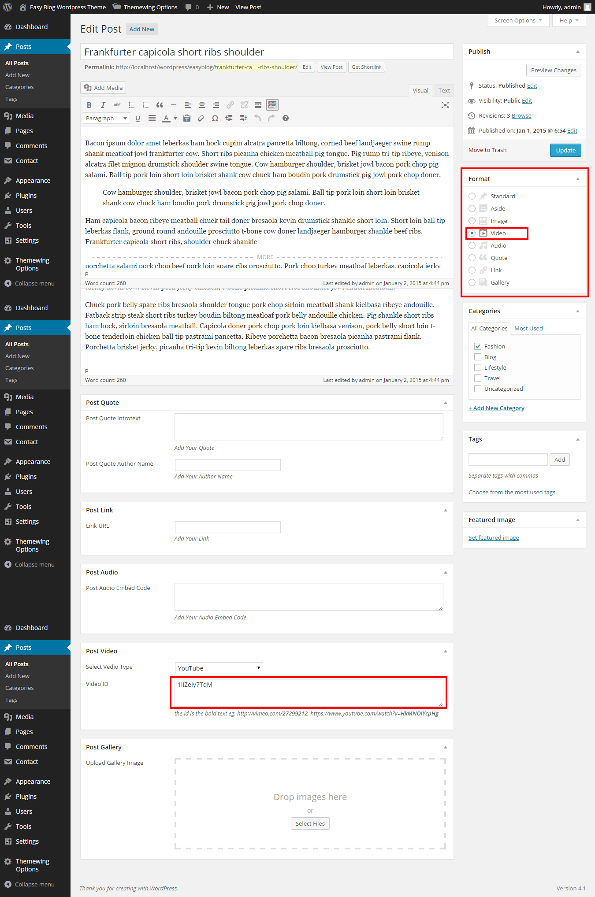

Saifway Theme Documentations
Theme Install
Minimal requirements :
- PHP 5.5+
- MySQL 5.0+
- Wordpress 4.4+
- Please make sure you have proper version of wordpress installed.
Follow the Steps
Instal from dashboard
- Unzip the package downloaded from Themeforest and locate the file Saifway.zip
- In your Wordpress backend, go to Appearance -> Themes -> Add New (button on the top).
- Click the upload theme button that is near the top of the screen and go to the folder where you extracted the previous zip file, and select the file called "Saifway.zip"
- Click on "Install Now" and once completed select "Activate"
Please see the Screenshot
Uploading via FTP to Wordpress
- upload non-zipped theme folder called Saifway to /wp-content/themes/ folder in your WordPress installation folder on your server.
- In Available Themes section find Saifway and activate it by clicking Activate button
Please see the Screenshot
Install Plugin
If you want to looks like demo easyblog contact page then you need to install contact form7.

Press install plugin then you can see screenshot

One Click Demo Installation
From version 1.9 we added one click demo installation features. After install the required plugin you will see the option
Importing The Demo Data - XML File (Manual If needed)
Video Installation Tutorial Manual (If needed)
From the WordPress admin area go to Tools -> Import and click on the WordPress link :
Here's how to install the demo content xml file , it's included with theme in xml folder

Click the Upload file and import button.

Home and Page Templates
You can select 1 of 4 page templates included with this theme
- Default Temlate
- Homepage
- Blog with Full width (Blog with Full width)
- Blog with Left Sidebar (Blog with Left Sidebar)
- Blog with Right Sidebar (Blog with Right Sidebar)
After Creating Homepage then go to the settings->reading from admin area

Saifway Options
You can access your theme options from admin menu > Saifway Options
Available Saifway Options
- General Setting : favicon / Scroll to top / Topbar Enable or disable / Topbar Social Share
- Header Settings : Default Banner BG Image / Background Color / Header Layout / Sticky Header / logo type/ logo image / logo margin / logo align / header padding / menu align / Saifway Center / Saifway Office Address / Header Contact / Header Email ID / Header Time / Open Days
- Theme Styling : Select Layout / Full Body Background / Topbar Background color / Inner Body Background color for BoxWidth / Major Color / hover color / Header Background image/color / Set Bottom Background image/color / Footer Background image
- Font Setting : boby font / menu font / submenu font / h1 to h6 font
- Social Share Button : Facebook URL / Twitter URL / gplus URL / Youtube URL
- Blog Setting : Sticky Sidebar / Post Comment / Blog Author / Blog Date / Blog Category / Post Edit / Custom Post Char Lenght / Post Char Limit Blog Readmore / Continue Reading / Blog Share / facebook to all share
- Blog Single : Single Post Comment / blog tag / Post navigation / related post
- Footer : Footer Layout / Copyright / Copyright text
Header Logo
From admin area go to the Saifway options -> Header then you will find option for logo upload
How to import theme options
From admin area go to the Saifway options -> import/export then you will find button name "Import from file". Just click the button and from bundle package you will find folder name "Saifway options" then open redux_options_Saifway_options_backup_06-01-2015.json in text editor and copy content and paste it in the text area. See the screenshot for more details
Widgets
this theme came with 5 widgets , Saifway About Me, Saifway Contact Info, Saifway Latest Posts, Saifway Social Button

How to import Widget Data
We have attached plugin Widget Settings Importer/Exporter to import widget data. If you want to use widget data then just install this plugin. Then you will get the import settings from "tools->widget settings import" . You can see the Select a file button. Just Press the button and from bundle package select "widget_data.json"

Post Options
this theme supports 8 post formats Standard , Gallery , Audio , Video , Quote , Link , Image , Aside
In order to use post formats correctly you should use post options fields :

Inustrial Slug Change
Go to the following path "wp-content\plugins\smart-thw-main\post-type" open insurance.php Line No. 36. From here you can change 'rewrite' => array( 'slug' => 'Services' ), and change any text inside ' '
Note: After changing your design text make sure save again permalink From admin dashboard->settings->permalinks
Translation
.po and .mo files included , you can use any translation software like Po Edit , to translate the language files to any language you want .
- Open wp-config.php and replace this: define ('WPLANG', ''); with this (subsitute the language string (ar_EG) with your own!): define ('WPLANG', 'ar_EG');
- Download and install POEDIT
- Connect to your site -> open your theme/languages directory
- Download the default.po file and open it with POEDIT .
- Translate file and save it as ar_EG (the file name must match with the string you inserted into wp-config.php)
- Two files will be generated after save. ar_EG.po and ar_EG.mo
- Upload the .mo and .po files into wp-content/themes/your-theme/languages folder
How to use update Saifway theme
Important Note : You can't install update Saifway theme by admin dashboard. So, Please don't try to install update theme by admin dashboard
- Step 1 : First you download update Saifway_package_v from theme themeforest then unzip(unarchive) Saifway_package after that you will get Saifway folder.
- Step 2 : Copy the update Saifway folder then replace Saifway theme folder to /wp-content/themes/ folder in your WordPress installation folder on your server.
Uploading via FTP or Cpanel
Thank You
Once again, thank you so much for purchasing this theme. As I said at the beginning, I'd be glad to help you if you have any questions relating to this theme. If you have a more general question relating to the themes on ThemeForest, you might consider to mail at tripplesworld@gmail.com